Volkswagen Passat B7 kombi w automacie, auto kupione w polskim salonie, silnik 1,4 benzyna. Auto posiada bogata wersje wyposazenia: podgrzewane fotele kierowcy i pasażera, kierownica wielofunkcyjna, klimatyzacja, lusterka skladane automatycznie, czujniki parkowania przód i tył, felgi aluminiowe. Auto było diagnozowane w ASO. Wyswietyla się błąd sterownika. Tak wiec do zrobienia jest sterownik elektryczny, który można zregenerowac lub można wymienić cały moduł. Jak kto woli. Auto jest unieruchomione z tego powodu. Przebieg auta to 253 tys km. Można zrobić rozrząd, bo nie był robiony. Stan wizualny auta tak jak na zdjęciach. Widoczne sa ślady zarysowań lewy przedni zderzak i prawe tylne drzwi. Auto serwisowane na bieżąco, wymieniane oleje, klocki itp. Auto posiada badanie techniczne, Pełne Ubezpieczenie OC i AC. Osoby zainteresowane kupnem zapraszam do kontaktu. Aktualnie auto jest w ASO i czeka na naprawę. Cena w ofercie dotyczy auta przed naprawa!! Nie odpowiadam na sms. Tylko poważne oferty!
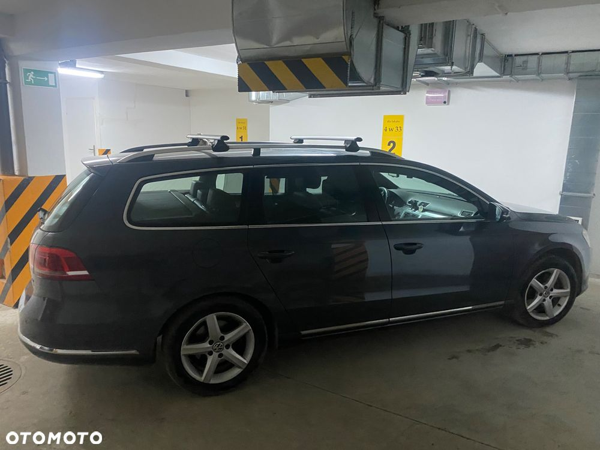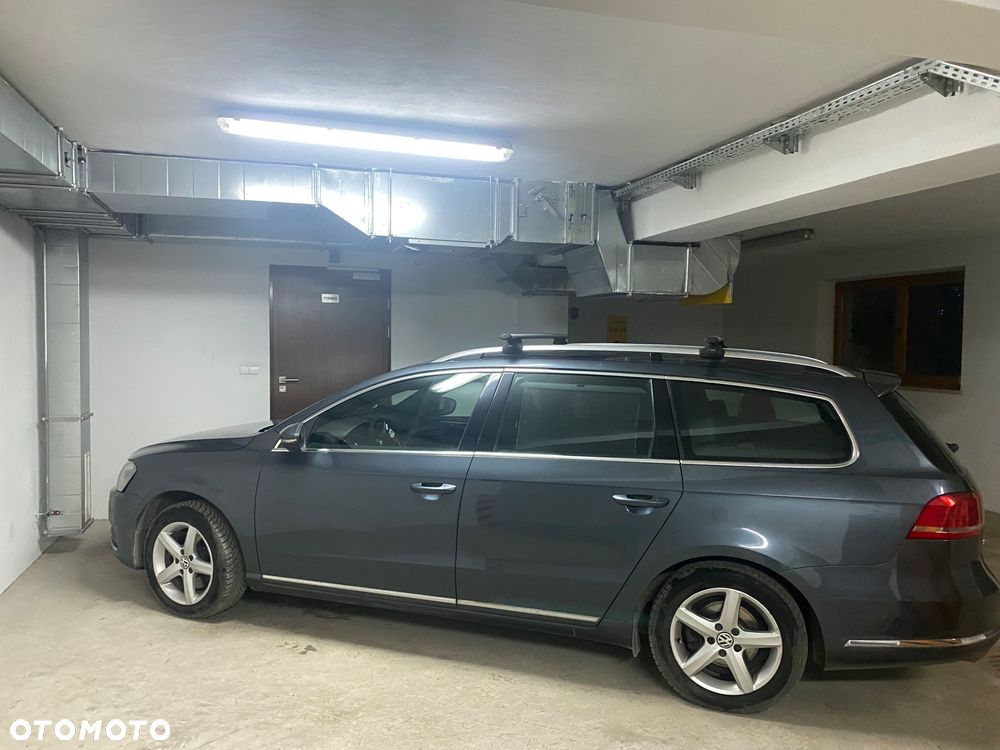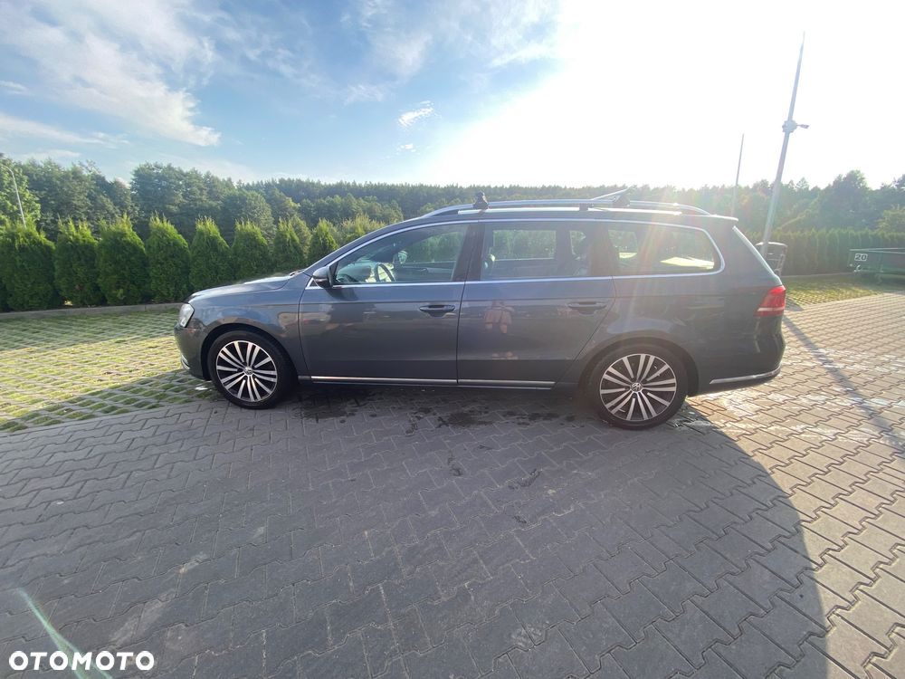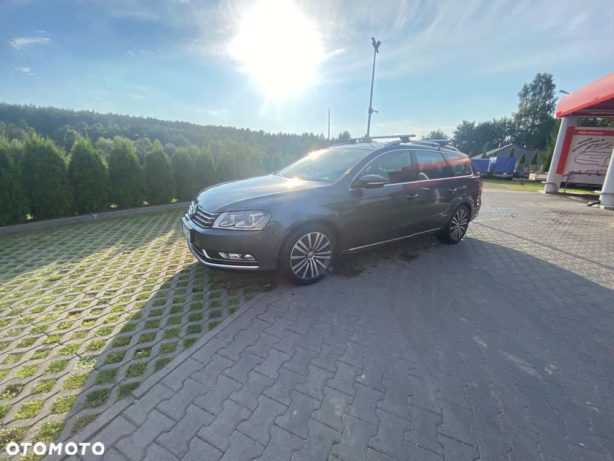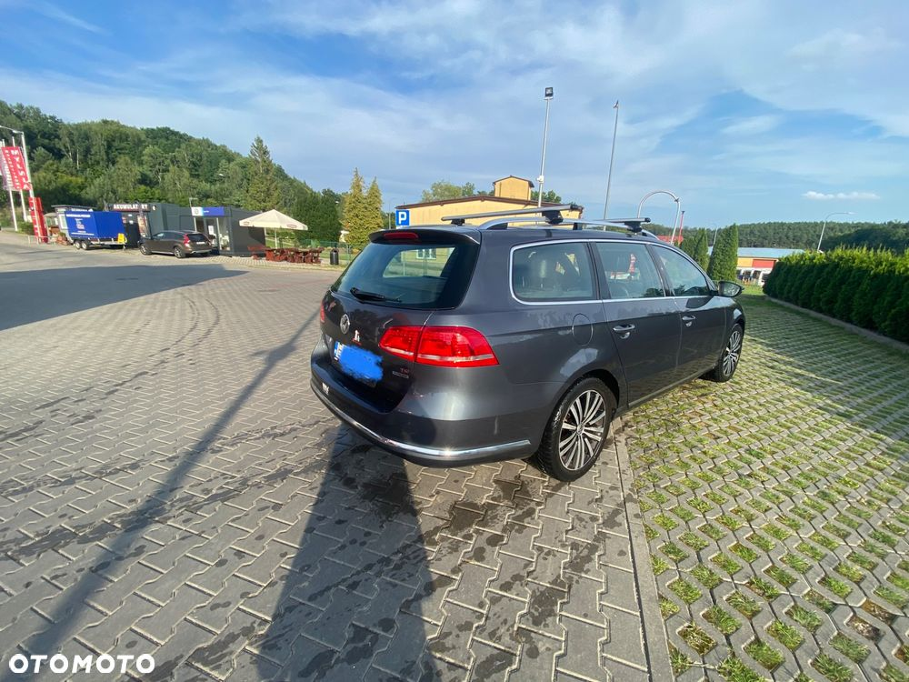 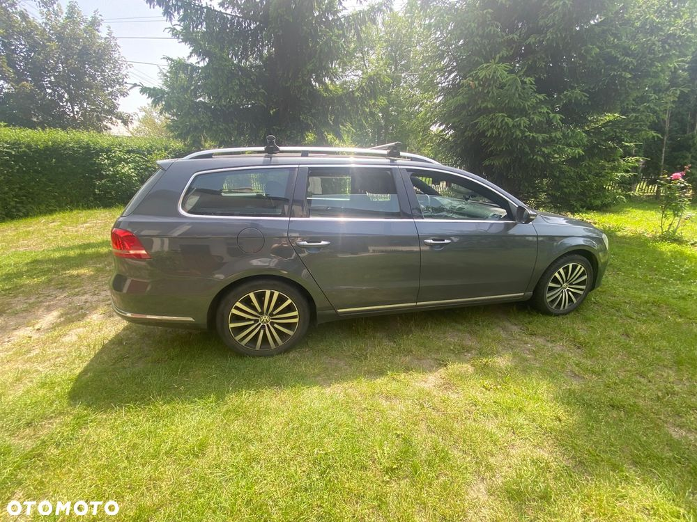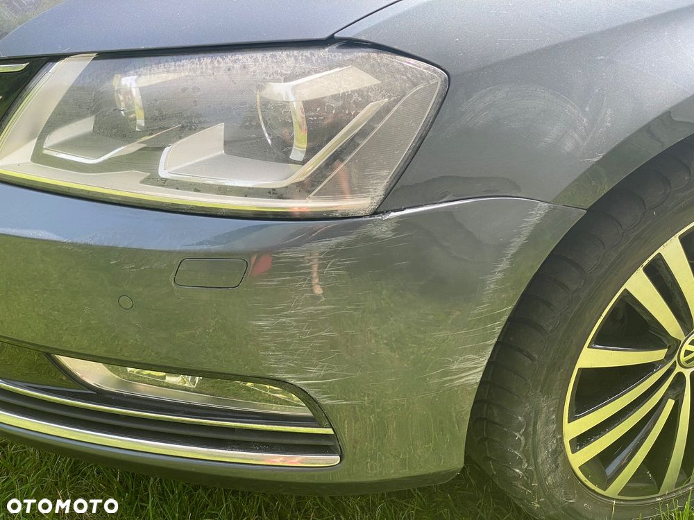
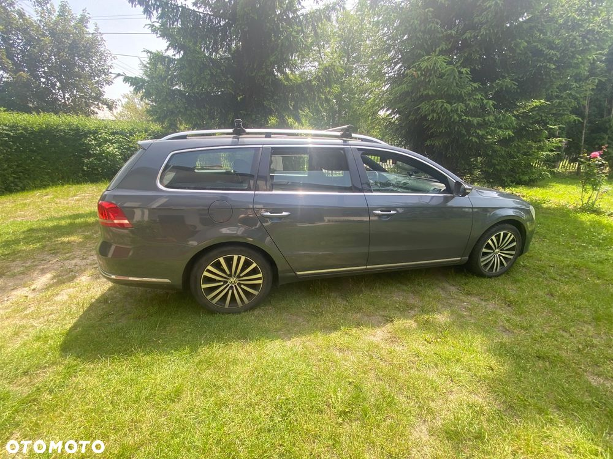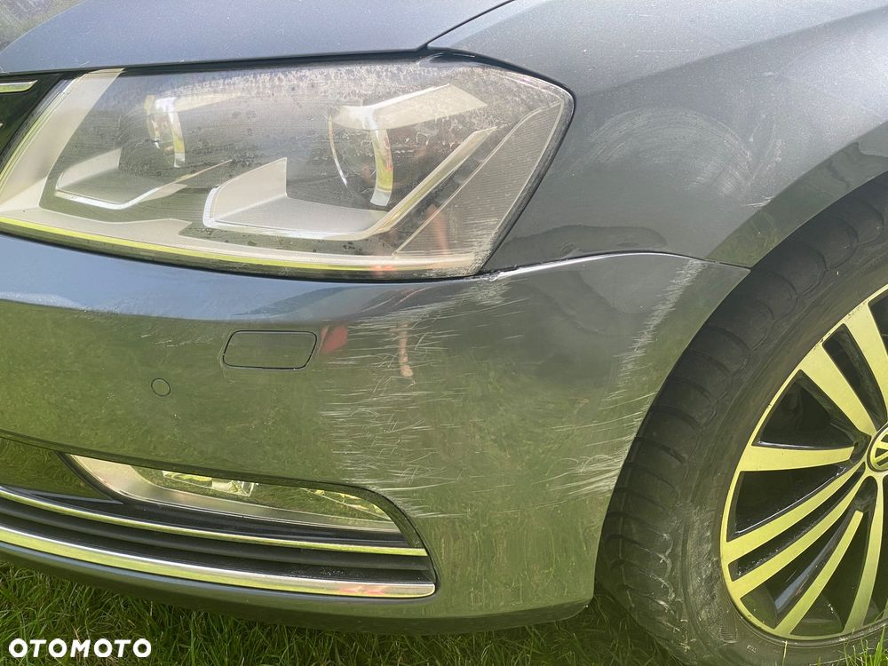 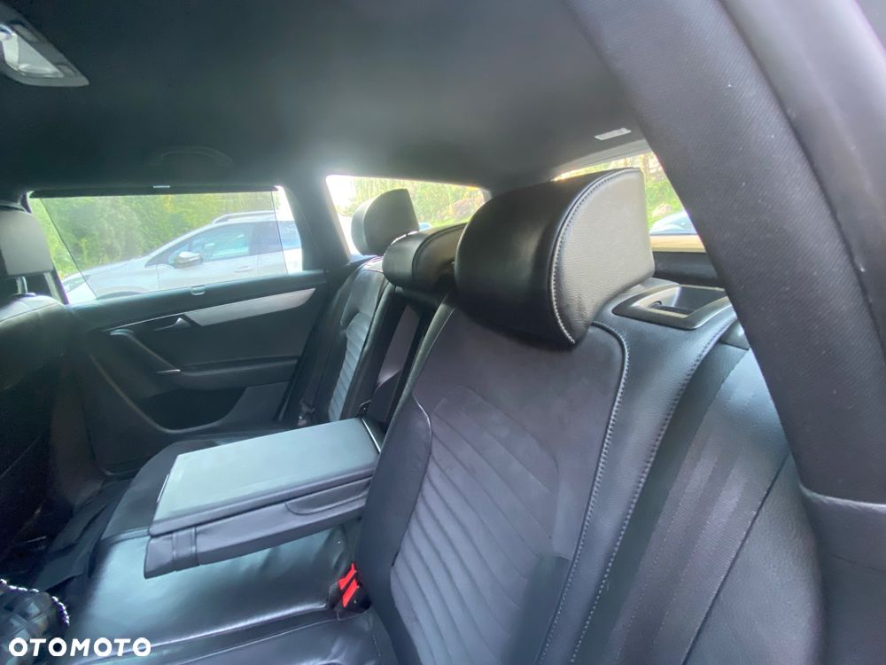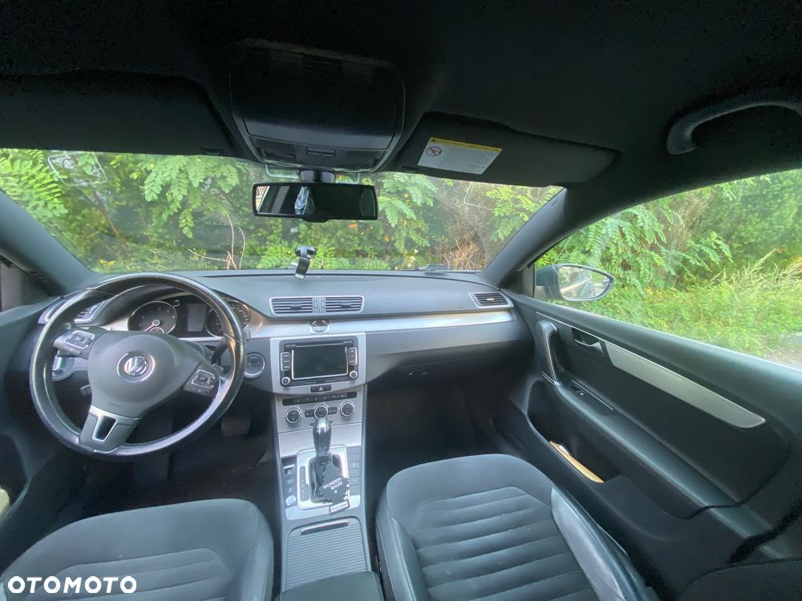
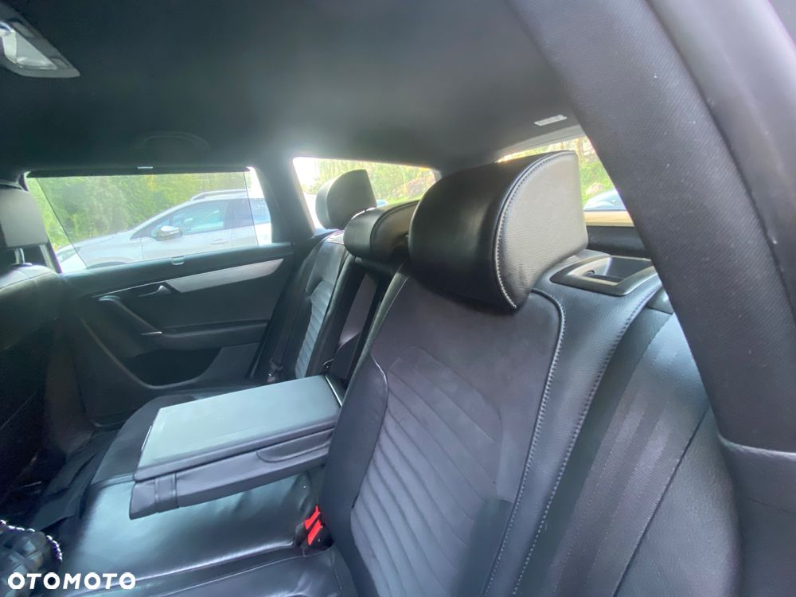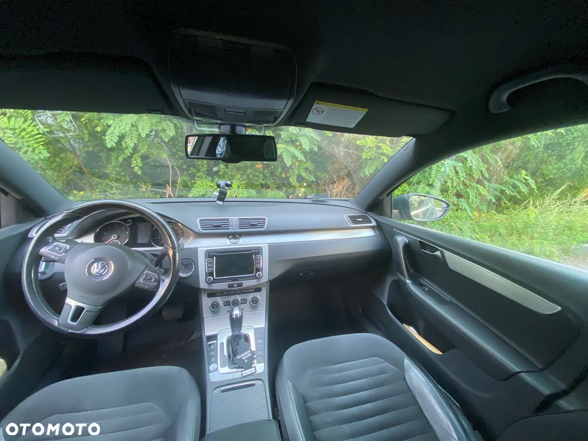